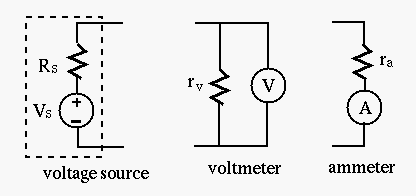

Next: Source and Load Up: Chapter 1: Basic Quantities Previous: Kirchhoff's Laws
Ideal Energy Sources:
Consider the following ideal voltage source  and ideal current
source
and ideal current
source  , both directly connected to a load resistor
, both directly connected to a load resistor  . We want
to find both the load voltage
. We want
to find both the load voltage  across and the load current
across and the load current  through :
through :
independent
of the current through it . The ideal voltage source can
provide constant voltage to any number of resistors in parallel with
the source, independent of how much current they each draw.
independent
of the voltage across it  . The ideal current source can
provide constant current to any number of resistors in series with
the source.
. The ideal current source can
provide constant current to any number of resistors in series with
the source.
However, such ideal sources do not exist in reality, due to the following dilemmas:
 (open circuit), the load current
,
(open circuit), the load current
,
Realistic voltage source:
In reality, all voltage sources (e.g., a battery or a voltage amplifier
circuit) can be more realistically modeled by an ideal voltage source
in series with a nonzero internal resistance  , which causes an
internal voltage drop due to the current drawn by the load ,
so that the actual output voltage across the load
is lower
than . The load voltage and current are constrained by the
following two relationships imposed by he voltage source
and
the load :
, which causes an
internal voltage drop due to the current drawn by the load ,
so that the actual output voltage across the load
is lower
than . The load voltage and current are constrained by the
following two relationships imposed by he voltage source
and
the load :
| (104) |
and , we get:
| (105) |
to be as close to the voltage source
as possible, the internal resistance of a voltage source needs to be as
small as possible, ideally .
The slope of the first curve is the internal resistance and the slope
of the second curve is . Solving these two equations we get load voltage
and current .
Only in the case of an ideal voltage source with will .
For , the heavier the load, i.e., the smaller , the larger the
load current , and the lower the load voltage :
| (106) |
is the same
as , i.e., the electric energy of the battery is consumed internally,
with no energy delivered to external circuit.
Realistic current source:
In reality, all current sources (e.g., a solar cell or a current amplifier
circuit) can be modeled by an ideal current source in parallel with a
nonzero internal resistance , which causes an internal current
so that the actual output current through the load
is lower than . The load voltage and current are constrained by
the following two relationships imposed by the current source
and
the load :
| (107) |
and , we get
| (108) |
For the output (load) current to be as close to the current source
as possible, the internal resistance of a current source should be as
large as possible, ideally
.
The slope of the first curve is the internal resistance and the slope
of the second curve is . Solving these two equations we get load voltage
and current .
Only in the case of an ideal current source will
and .
For
, the larger the load resistance , the smaller the
current .
| (109) |
Energy Source Conversion
Any two circuits with the same voltage-current relation
(V-I characteristics) at the output port with are
equivalent to each other, as they have the same external behavior,
although they may be different internally.
Comparing the voltage-current relations of the two energy sources:
| (110) |
| (111) |
Both of the two energy sources above can be treated as either a voltage or a current source.
and is therefore a good
voltage source as the voltage received by the load is close to
the source voltage , but a bad current source as the current
received by the load is much lower than the source current
.
and is therefore a bad
voltage source as the voltage received by the load is much lower
than the source voltage
, but a good current source as the
current received by the load is close to the source current.
The Internal Resistance :
The internal resistance can be found as the absolute value of the
slope of the straight line of the V-I characteristic plot:
| (112) |
and axes:
| (113) |
| (114) |
While this method can be used to find the internal resistance
without knowing either or in theory, it may not be practical,
as the short circuit current is difficult to get (the voltage source may
be damaged). Instead, we can find some other two voltages and currents
 and
and  () corresponding to two load resistors
() corresponding to two load resistors  and
and
 . Then can be found as the slope of the straight line determined
by the two points
and
. We see that the previous
method can be considered as a special case when
. Then can be found as the slope of the straight line determined
by the two points
and
. We see that the previous
method can be considered as a special case when
 (open circuit)
and (short circuit).
(open circuit)
and (short circuit).
Example 1:
A given voltage source of  and
can be converted to a
current source of
with the same (and vice versa). A load
of
receives from this energy source a voltage (80% of
the voltage source) and a current (20% of the current source). As
the energy source has a low internal resistance , it is a good voltage
source but a poor current source.
and
can be converted to a
current source of
with the same (and vice versa). A load
of
receives from this energy source a voltage (80% of
the voltage source) and a current (20% of the current source). As
the energy source has a low internal resistance , it is a good voltage
source but a poor current source.
Example 2:
A given current source of and
can be converted to a
voltage source of
with the same (and vice versa). A load
of
receives from this energy source a voltage (20%
of the voltage source) and a current
(80% of the current source).
As energy source has a high internal resistance , it is a good current
source but a poor voltage source.
Power Delivery/Absorption
in a circuit is such that it
goes internally through a voltage source from its low potential
(-) to high (+), and externally through the rest of the circuit from
high to low, then the polarities of the voltage and the current are
consistent (both positive or negative depending on the assumed
polarity), and the source is delivering power .
across a current
source is such that the head of the arrow of the current source is
at high potential (+) and the tail of the arrow is at low potential (-),
then the polarity of the voltage and the current is consistent, and
the current source is delivering power .
Example 3:
The current in a circuit composed of an ideal voltage source
and a resistor  is
. The power consumption of the
resistor and voltage source are
and
,
respectively. The negative value of indicates the power is actually
not consumed but generated by the voltage source (converted from other
forms of energy, e.g., chemical, mechanical, etc.)
is
. The power consumption of the
resistor and voltage source are
and
,
respectively. The negative value of indicates the power is actually
not consumed but generated by the voltage source (converted from other
forms of energy, e.g., chemical, mechanical, etc.)
Example 4:
In the circuit shown below, the ideal current source is , and the ideal voltage source is , the resistor is . Find the current through and voltage across each of the three components. Find the power delivered, absorbed, or dissipated by each of the three components.

The current source provides current through the left branch
(upward), while the voltage source provides across all three
components. The current through  is
(downward),
by KCL, the current through the voltage source is
is
(downward),
by KCL, the current through the voltage source is
 .
We therefore have:
.
We therefore have:
is
,
(Homework) Redo the above with the polarity of reversed. Find:
:
Comment: While various voltage sources such as batteries are common in everyday life, current sources do not seem to be widely available. One type of current source is solar-cell, which generates current proportional to the intensity of the incoming light. Also, certain transistor circuits are designed to output constant current. Moreover, as discussed above, any voltage source can be converted into a current source. For example, a current source with mA and can be implemented by a voltage source of in series with .
Example 5 (Homework)

A realistic voltage source (e.g., a battery) can be modeled as an ideal
voltage source in series with an internal resistance . Ideally,
the voltage can be obtained by measuring the open-circuit voltage
with a voltmeter
| (115) |
can be obtained as the ratio of the
open-circuit voltage to the shirt-circuit current , which
can be measured by an ammeter:
| (116) |
However, in reality, any voltmeter has an internal resistance in
parallel with the meter, and any ammeter has an internal resistance
in series with the meter. For better measurement accuracy, should be
small or large, how about ? Why? Give the expression of the measured
open-circuit voltage and short-circuit current in terms of the
true and , as well as and .
Assume
. What
are the measured open-circuit voltage , and the short-circuit current
? Given , , and the known and , how do your get the
true and using your method above? Show your numerical computations.
Design a method to obtain the true source voltage and internal
resistance by a voltmeter and an ammeter with known and .
Give the expression of and in terms of the measured open-circuit
voltage , short-circuit , and and .
Example 6 (Homework)
Usually the internal resistances of the voltmeter and ammeter are not
readily known (and the values may change depending on the scale used).
As another method to find and of a voltage source, we can
measure the voltage across two different load resistors
connected to the voltage source. If the values of are significantly
smaller than that of the internal resistance of the voltmeter, the
voltmeter can be considered to be ideal with
.
Assume when the load resistor is
, the voltage across it
is found to be , when a different load
is used
and the voltage across it is . Find and of the
voltage source.
Answer:
| (117) |
| (118) |
| (119) |
| (120) |